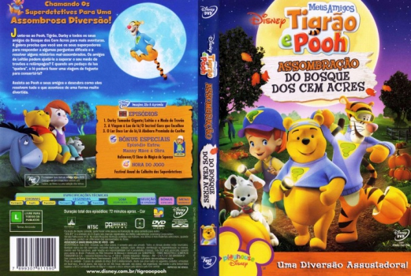

Outro Título:My Friends Tigger & Pooh: Hundred Acre Wood Haunt
País:United States, 72 minutos
Idiomas falados:Espanhol, Inglês, Português
Gênero(s):Animação, Família
Diretor(s):David Hartman, Don MacKinnon
Escritor(es):Nicole Dubuc, Brian Hohlfeld, Dean Stefan
Codec:MPEG-2 (DVD)
Número: 5814


Certificado:
Sinopse:
Chegou o Outono, a estação das surpresas, e os teus amigos de sempre precisam dos teus poderes de detective para resolver alguns mistérios divertidos e assustadores! Conseguirão os amigos de Piglet ajudá-lo a ultrapassar o terrível medo que ele tem das trovoadas? E quando um pedaço da Lua se estraga, conseguirá Eeyore fazer uma viagem de foguetão para o arranjar?
Elenco:


Tipo de mídia: DVD5,
Legendas: Espanhol, Inglês, Português, Sem Legendas
Alugado: Não
Tela: Anamorphic Widescreen